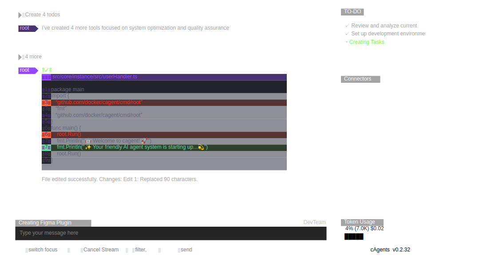

The agent app and the runtime beneath it, designed, researched, and validated in prototype.
Docker · Lead designer (dagent/AP) · cagent = OSS runtime2025–2026
Priya · Marco · Samagent eng · governance · newcomer
Context
Docker's bet on agents has two layers: cagent, the open-source CLI multi-agent runtime that Gordon and agents run on (~20.7M command events), and dagent, the agent app where developers create, run, import and share agents with a marketplace (“Agent Fleet”). This case is the design-and-research narrative of the app layer that fronts the runtime.
Research
The platform was researched while it was built. The Dagent UX Study ran ~11 moderated think-aloud sessions (Oct 2025) covering agent creation, running, and sharing, plus a continuous feedback instrument ("get the Agents from users" via URL or .yaml upload). Findings were synthesized against personas Priya (agent engineer), Marco (governance) and Sam (newcomer).
The runtime side was measured through cagent command events (~20.7M), and the prototype itself became an instrument: 369 agents created, 2,144 runs, 475 pulls across 96 users.
Conceptualization
Sessions research forced the core IA decision: what is a session, what is a sandbox, and how do kits and marketplace listings relate. The answer shaped the New Session Composer direction: sessions as first-class, observable units (steps, artifacts, token budgets), with cost visible inline rather than in a billing page after the fact.
For the runtime, the concept was agents-as-composable-units: YAML definitions that are git-friendly and portable, with the app layer (dagent) providing creation, sharing and governance on top.
UX use cases
Each card defines the job, the design response, the objective, the measured outcome, and the trade-off made.
cagent runtime with YAML-defined agents; the UX above it standardizes sessions, runs and logs.
“Run multi-agent workflows from the terminal”
Objective
Make an agent team as composable and scriptable as an image.
Outcome
~20.7M command events on the runtime; the same primitives surface in the Agentic Platform sessions/sandboxes IA.
Trade-off
CLI-first maximizes composability and speed at the cost of discoverability, which the app layer answers.
dagent lifecycle: create, edit, run, import/export, pull/push to the Agent Fleet marketplace.
“Create, run and share agents without building from scratch”
Objective
Turn agents from one-off scripts into shareable artifacts.
Outcome
Prototype-scale validation: 369 agents created, 2,144 runs, 475 pulls across 96 users (Aug 2025 – Jun 2026).
Trade-off
Marketplace sharing before maturity risks low-quality listings; early scale accepted as the cost of learning the shape.
Import by URL or .yaml upload (Qualtrics instrument: get the Agents from users with a URL or by uploading .yaml files).
“Bring an existing agent definition into Docker”
Objective
Meet power users where their agents already live.
Outcome
90 imports logged in prototype; fed the sessions-vs-sandboxes modeling on the platform.
Trade-off
Accepting arbitrary YAML widens the failure surface; mitigated with validation feedback at import.
The Dagent UX Study: ~11 moderated think-aloud sessions (Oct 2025) plus a continuous feedback form.
“Understand what people actually do with agents”
Objective
Ground the platform's primitives in observed behavior, not opinion.
Outcome
Study findings shaped sessions/sandboxes, kits and the New Session Composer direction.
Trade-off
Prototype-scale metrics cannot carry the scale story; the study trades breadth for depth by design.
Measurement mixed scale and signal: runtime command events (~20.7M) show adoption; prototype telemetry (369 agents / 2,144 runs / 475 pulls) plus the study sessions show direction. The two are deliberately reported apart: prototype numbers are not scale numbers.
~20.7Mcagent command events
369 / 2,144agents created / runs in dagent prototype
~11moderated UX-study sessions facilitated
96distinct dagent users (prototype)
dagent numbers are prototype-phase by design (Sigma L1_DAGENT__AGENT); the runtime (cagent) is open source at github.com/docker/cagent. Naming: dagent = app, cagent = runtime, Gordon = embedded assistant.
Reflection
The honest framing matters: this is a design-and-research narrative of a platform in motion. Primitives moved because observed behavior said so, not because the roadmap said so.
Design screens
Exported from the original Figma files with figx.

cagent TUI: diff review, TO-DO tracking, live token usage